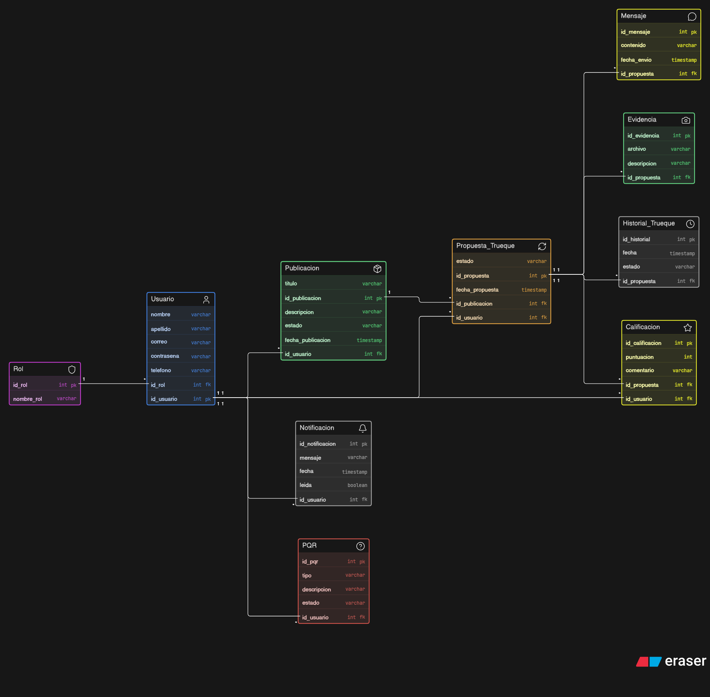
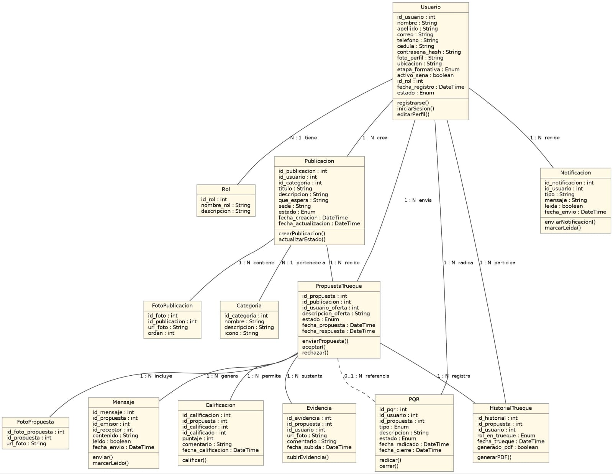
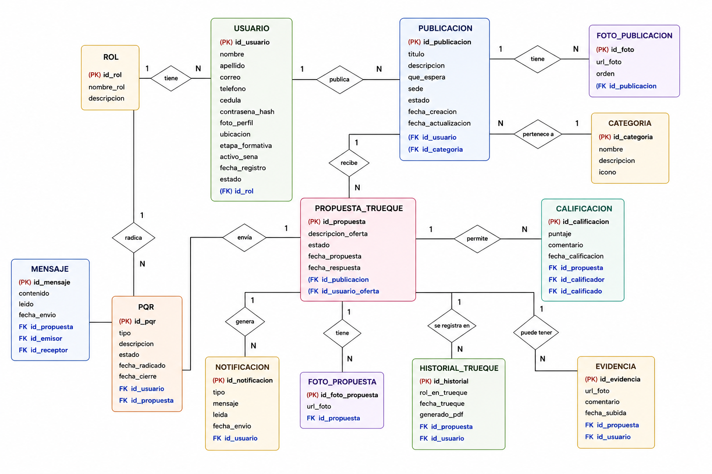
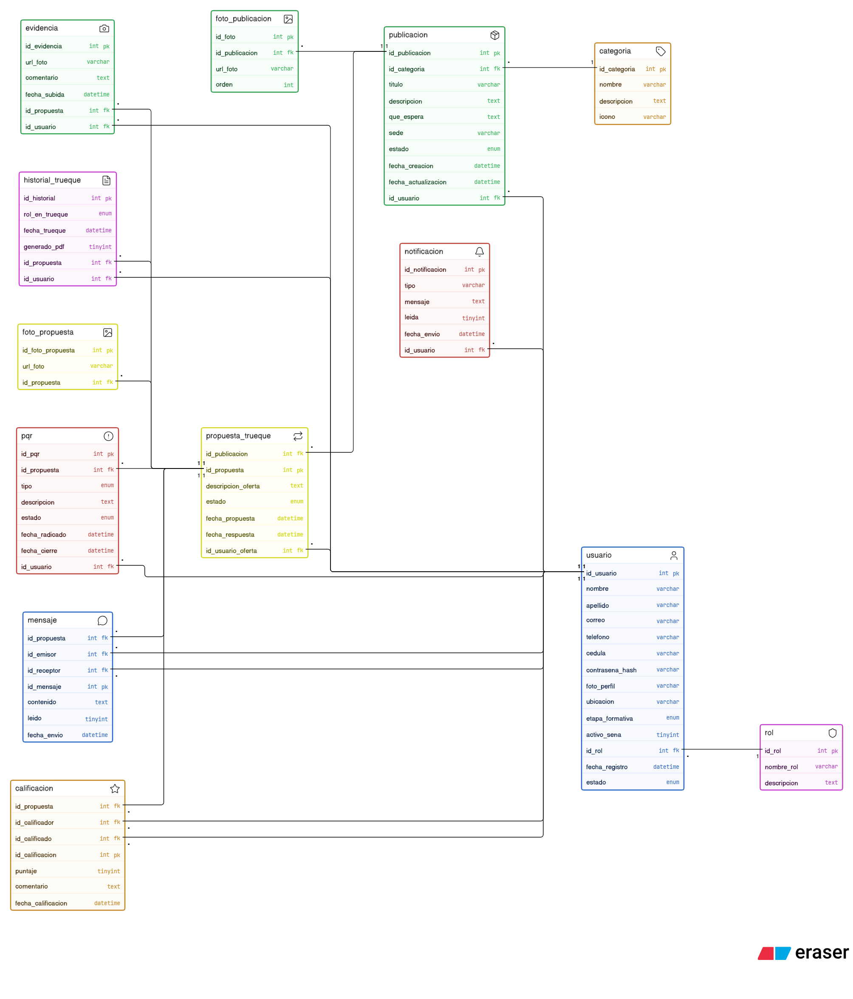
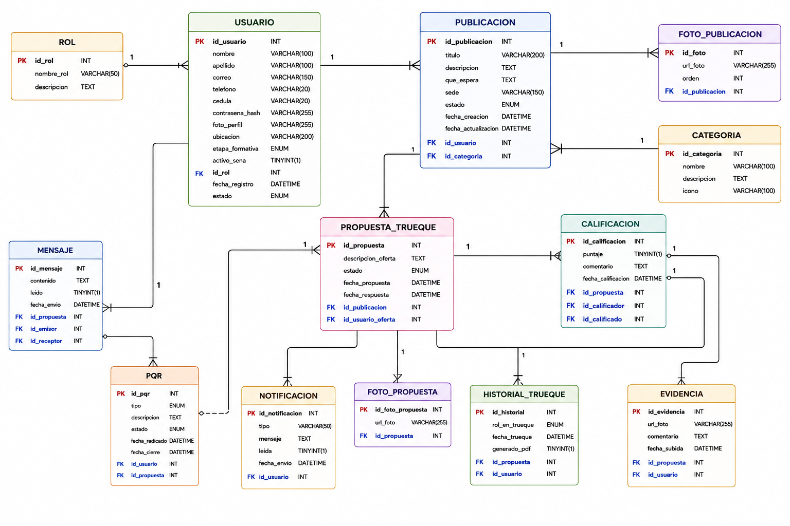
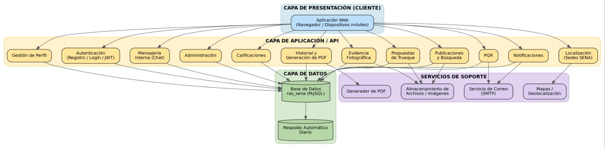

Plataforma digital de intercambio solidario y donaciones académicas entre aprendices del SENA ·
Presentación Final de Trimestre
INTEGRANTEJohan Gonzalo Garcia
INTEGRANTEVannesa Castañeda
02 · Introducción
¿De qué trata RAS?
RAS nace como respuesta a una necesidad real en la comunidad SENA: facilitar el acceso a
materiales académicos mediante un sistema de trueque y donaciones supervisado por la institution.
RAS (Red de Apoyo SENA) es una plataforma web colaborativa diseñada específicamente para la
comunidad de aprendices del SENA, cuyo objetivo principal es facilitar el trueque de materiales de
formación, herramientas y donaciones.
El sistema busca mitigar la deserción estudiantil y apoyar la economía de los aprendices, permitiendo que
elementos que un estudiante ya no utiliza (como libros, herramientas de taller, componentes electrónicos o
uniformes) puedan ser intercambiados de manera segura o entregados como donación a quienes los necesitan para
continuar con sus procesos de aprendizaje.
🎓
Comunidad SENA
Una plataforma exclusiva para aprendices, donde quienes poseen artículos en buen estado pueden contribuir
solidariamente con quienes más los necesitan.
🔄
Trueque digital
Uniformes, equipos de cómputo, libros y demás insumos académicos circulan dentro de un entorno digital
seguro, supervisado por la institución.
🛡️
Entorno supervisado
El sistema garantiza verificación de usuarios SENA, evidencia fotográfica de los intercambios y trazabilidad
completa de cada transacción.
🤝
Solidaridad institucional
La iniciativa amplía el alcance de la red de apoyo existente dentro del SENA, favoreciendo a los aprendices
en condición de vulnerabilidad económica.
03 · Situación Problema
El problema que resolvemos
El SENA carece de un mecanismo digital estructurado para gestionar donaciones e intercambios
entre sus miembros de forma eficiente, transparente y trazable.
En el SENA existen aprendices que enfrentan dificultades económicas que les impiden acceder a los materiales
e implementos necesarios para su formación técnica o tecnológica.
Esta carencia genera que recursos en buen estado permanezcan sin uso por parte de quienes ya no los
necesitan, mientras otros aprendices los requieren urgentemente.
La ausencia de una plataforma de gestión de donaciones limita el alcance de la solidaridad institucional y
dificulta el control, la verificación y el aprovechamiento de los recursos disponibles en la comunidad SENA.
04 · Pregunta Problema
La pregunta que guía el proyecto
Pregunta de investigación
Cómo articular eficientemente a la comunidad del SENA y a donantes externos mediante un sistema web de
trueques y donaciones para mitigar la falta de recursos académicos.
05 · Meta Principal
Objetivo General
El propósito principal de RAS está enfocado en generar un impacto directo y positivo sobre
el bienestar económico y educativo de la comunidad estudiantil.
Implementar en el SENA un aplicativo que permita el intercambio solidario entre aprendices y personas de la
comunidad, con el fin de contribuir al mejoramiento de la calidad de vida de los aprendices en condiciones de
vulnerabilidad económica, mediante la entrega de donaciones en uniformes, utensilios y materiales de apoyo
necesarios para el adecuado desarrollo de su formación técnica o tecnológica.
06 · Líneas de Acción
Objetivos Específicos
Pasos tácticos y funcionales diseñados para materializar el alcance del sistema de manera
progresiva.
01
Crear un sistema donde los usuarios puedan registrarse, iniciar sesión y gestionar su perfil dentro de la
plataforma.
02
Recolectar y redistribuir donaciones de ropa y artículos básicos a personas necesitadas de la comunidad
local.
03
Implementar un sistema solidario donde los beneficiarios puedan contribuir según sus capacidades, fomentando
el apoyo mutuo.
04
Permitir que los usuarios realicen donaciones de manera sencilla y segura a través de la plataforma digital.
07 · Diagramas UML y Base de Datos
Modelo de Arquitectura de Datos (MER)
A continuación, se presenta la arquitectura física de la base de datos que soporta la lógica
de negocio de la plataforma, garantizando la trazabilidad de los usuarios, las publicaciones, los estados de los
trueques y la mensajería interna.

* Figura 1: Estructura relacional definitiva del sistema RAS, detallando llaves primarias (PK), foráneas (FK) y
la cardinalidad de las operaciones.
08.5 · Diseño de Software
Diagrama de Clases UML
En nuestro proyecto RAS (Red de Apoyo SENA), el Diagrama de Clases UML
representa la estructura interna de la aplicación a nivel de código fuente. Modela de forma precisa las entidades
del negocio, los controladores que reciben las peticiones de los aprendices, y los servicios encargados de
gestionar la lógica de los trueques, donaciones, mensajería y validaciones, asegurando un desarrollo de software
organizado y modular.

* Figura 3: Diagrama de Clases UML que detalla la estructura de programación, métodos y relaciones esenciales
del sistema RAS.
08.5 · Diseño de Datos
Modelos de Base de Datos
Esta sección detalla la evolución de nuestra base de datos en el proyecto
RAS, desde la definición lógica de las entidades del negocio hasta su implementación técnica
final.
08.4 · Fundamentos del Proyecto
Mapa Conceptual RAS
El Mapa Conceptual del Proyecto RAS (Red de Apoyo SENA) funciona como la
herramienta visual que estructura el funcionamiento de nuestra plataforma colaborativa. Este esquema expone los
elementos clave del ecosistema: la plataforma web como eje central, las funcionalidades de trueque y donaciones
como mecanismos de interacción, y la mitigación de la deserción estudiantil junto al apoyo económico como
beneficios fundamentales para la comunidad de aprendices.

* Figura 2: Mapa conceptual que ilustra la lógica del sistema, conectando a los usuarios con recursos
académicos mediante una red de intercambio seguro y solidario.
08.6 · Diseño de Datos
Modelo Físico de Datos
El Modelo Físico del sistema RAS (Red de Apoyo SENA) define la estructura
real de nuestra base de datos. Este esquema detalla la implementación de las tablas, la asignación de claves
primarias (PK) y claves foráneas (FK), y la cardinalidad establecida para garantizar la integridad referencial y
la trazabilidad de cada trueque, donación y registro de usuario dentro de la plataforma.

* Figura 4: Modelo Físico que representa la organización de las tablas y relaciones del sistema RAS,
detallando los módulos de Usuario, Intercambio y Gestión para una operación eficiente.
08.5.5 · Diseño de Datos
Modelo Lógico de Datos
El Modelo Lógico del sistema RAS (Red de Apoyo SENA) describe la
estructura de los datos desde una perspectiva conceptual y relacional. Este diseño organiza las entidades,
atributos y las reglas de negocio que rigen la interacción entre usuarios, publicaciones y el proceso de
intercambio, permitiendo validar la lógica de la información antes de su transformación al esquema físico de la
base de datos.

* Figura 3.5: Modelo Lógico que detalla las entidades del negocio y sus atributos clave, estructurando la
lógica de las relaciones entre usuarios, ofertas de trueque y gestión de publicaciones del sistema RAS.
🏗️
Diagrama de Clases
Entidades
del modelo de datos: USUARIO, ROL, PUBLICACION, PROPUESTA_TRUEQUE, MENSAJE, CALIFICACION y 8 entidades más
con sus relaciones.
UML · Clases
📋
Diagrama de Registro
Flujo
completo del proceso de registro de usuario mediante correo Mi SENA, número de teléfono o cédula y
generación de credenciales.
UML · Actividad
📦
Diagrama de Publicación
Proceso de
publicación de artículos para trueque: ingreso de título, descripción, fotos, categoría y lo que el
usuario espera recibir.
UML · Secuencia
🌐
Diagrama de Despliegue
Arquitectura física del sistema: cliente web/móvil, servidor de aplicaciones, base de datos y servicios
externos de notificación.
UML · Despliegue
🧩
Diagrama de Componentes
Módulos
internos de la plataforma: autenticación, publicaciones, trueques, mensajería, notificaciones, evidencias
y PQR.
UML · Componentes
08 · Estructura de Software
Cómo está construido RAS
La plataforma sigue una arquitectura por capas bien definida con un desacoplamiento de
responsabilidades técnico.

* Figura 1: Diagrama de Arquitectura Multicapa Desacoplada para RAS.
🖥️ Presentación
Interfaz de usuario responsiva (web y móvil). Diseño intuitivo para usuarios con
conocimientos básicos. Compatible con navegadores modernos y múltiples dispositivos.
⚙️ Negocio
Lógica de trueques, validaciones de propuestas, sistema de calificaciones,
mensajería interna, notificaciones por correo y gestión de PQR.
💾 Datos
Base de datos relacional con 13 entidades, script SQL completo, copias de
seguridad automáticas diarias y cifrado de contraseñas con bcrypt.
🔗 Servicios
Integración con servicio de correo para notificaciones, almacenamiento de imágenes
(fotos de perfil, artículos y evidencias) y geolocalización de sedes.
08 · Patrones e Ingeniería
Patrones de Arquitectura Estándar
El sistema adopta estándares industriales de la ingeniería de software para asegurar la
alta disponibilidad, escalabilidad y mantenibilidad del código.
🏛️ Arquitectura Multicapa
Separación estricta de responsabilidades dividida en Presentación (UI responsiva),
Capa de Negocio (Controladores y Servicios lógicos) y Capa de Datos para blindar las transacciones de
trueque.
🔄 Patrón M-V-C
Modelo-Vista-Controlador: Las vistas consumen datos reactivos, los
controladores orquestan la lógica de validación de intercambios y los modelos mapean las reglas del MER de
forma segura.
🗃️ Repository Pattern
Actúa como una capa de abstracción entre la lógica de negocio y el origen de datos
relacional, aislando las consultas directas a la base de datos SQL para facilitar futuras migraciones o
pruebas unitarias.
10 · Dirección de Arte
Manual de Identidad de Marca
Lineamientos gráficos oficiales establecidos para mantener la coherencia comunicativa de
la Red de Apoyo SENA (RAS).
Paleta de Colores Institucionales
Verde SENA
#39A900
Negro Antracita
#1A231A
Fondo Neutro
#F5F7F5
RAS · Red de Apoyo SENA
Estándares de Codificación
Convenciones de nomenclatura y estructura derivadas del diccionario de datos y del script SQL
del proyecto RAS.
01 Nomenclatura de tablas
🗂️
Formato correcto
UsuarioPropuesta_TruequeHistorial_Trueque
Singular · PascalCase
🚫
Evitar
usuariospropuestaTrueque
Plural / camelCase
02 Nomenclatura de campos
Regla base: snake_case, siempre en minúscula, sin tildes.
// RF06 - Sistema de propuestas de truequefunction enviarPropuestaTrueque(idPublicacion, idUsuario) { ... }
09 · Gestión de Ingeniería
Marco de Trabajo: Scrum
El ciclo de vida de la plataforma RAS se gestiona bajo ingeniería de software ágil,
traduciendo los requerimientos del Backlog en incrementos de software iterativos y funcionales.
POProduct Owner
Responsable: Johan Gonzalo García Walteros. Encargado de maximizar
el valor del producto. Define, refina y prioriza los requerimientos en historias del Product Backlog,
asegurando que la solución se alinee con las necesidades solidarias de los aprendices y de la
institución.
Líder Backlog
SMScrum Master
Responsable: Nikol Vannesa Castañeda Carrillo. Facilitadora del
marco ágil. Remueve bloqueos o impedimentos técnicos y organizacionales, protege la concentración del
equipo y modera las ceremonias clave (Planning, Daily, Review y Retrospective).
Facilitador
DEVDevelopment Team
Integrantes: Johan García y Nikol Castañeda. Célula
multidisciplinar encargada del diseño técnico, modelado de bases de datos, codificación de APIs REST,
maquetación de interfaces web/móviles y ejecución del plan de pruebas integrales.
Célula Ejecutora
S01Sprint 1: Núcleo y Acceso Seguro
Desarrollo de las bases lógicas y autenticación cifrada. Incluye el registro completo
por número de cédula o correo institucional Mi SENA, control seguro de inicio de sesión y el módulo
interactivo de gestión del perfil del aprendiz.
RF01 · RF02 · RF03
S02Sprint 2: Motor del Trueque
Construcción del espacio central transaccional. Permite la publicación detallada de
insumos académicos (uniformes, libros, computadores) adjuntando fotos, estructuración del buscador
parametrizado y control de ofertas de intercambio.
RF04 · RF05 · RF06
S03Sprint 3: Módulos Colaborativos
Habilitación de las capas de comunicación e interacción en tiempo real. Programación
del chat interno de negociación para acordar entregas presenciales, sistema automatizado de
notificaciones vía correo electrónico y de reputación.
RF07 · RF08 · RF09
S04Sprint 4: Soporte y Control
Consolidación de auditoría y trazabilidad. Integración de geolocalización de sedes,
carga obligatoria de evidencias fotográficas del recurso recibido para la supervisión del SENA,
descargas de historiales en formato PDF y PQRs.